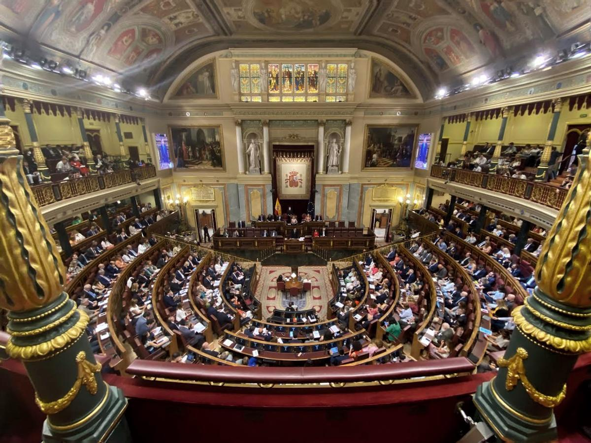

Ucrania restringe el uso de energía tras ataques rusos contra la red eléctrica.
Zelenski llana a la ciudadanía a disminuir el consumo eléctrico.

Zelenski - 2022
El presidente ucraniano, Volodimir Zelenski, ha urgida a sus ciudadanos a restringir a partir del jueves su consumo de energía para hacer frente a la destrucción de las centrales eléctricas provocada por el Ejército ruso. Tras una reunión con las empresas energéticas, Zelenski ha dicho que estaban preparando "todos los posibles escenarios de cara al invierno" y ha pedido ahorrar electricidad. En Moscú, el presidente ruso Vladimir Putin impuso la ley marcial en los cuatro territorios ucranianos que el Kremlin reivindica haber anexionado: Donetsk y Lugansk en el este, y Zaporiyia y Jersón en el sur. El anuncio se dio poco después de que las autoridades de ocupación en la ciudad de Jersón empezaran a evacuar a los civiles ante el empuje de la contraofensiva de Ucrania, que denunció esta acción como una "deportación masiva". Para contrarrestar la contraofensiva ucraniana, Rusia apostó desde la semana pasada por ataques con drones y misiles en amplias zonas del país, con un especial énfasis contra la red de suministro energético. Un 30% de las centrales eléctricas del país quedaron destruidas, indicó el Gobierno ucraniano, que advirtió del riesgo de apagones. Zelenski denunció que "el terror ruso se dirigirá a las instalaciones energéticas" y aseguró que estaban "trabajando en la creación de puntos de suministro energético móvil para infraestructura crítica". El alcalde de Kiev, Vitali Klichkó, ha pedido a la población que no enciendan grandes electrodomésticos. "Incluso un pequeño ahorro y reducción del consumo en cada hogar ayudará a estabilizar la operativa del sistema nacional de energía", afirmó. La capital se convirtió el miércoles por tercer día consecutivo en blanco de las tropas rusas, que también lanzaron ataques en zonas del oeste de Ucrania, normalmente a salvo de la ofensiva. Zelenski aseguró que diez drones de fabricación iraní fueron destruidos en Kiev en la jornada del miércoles. Deportación masiva Con la ley marcial en vigor en las regiones anexionadas, Rusia puede reforzar el poder de los militares, aplicar toques de queda, limitar desplazamientos, prohibir concentraciones públicas, entre otros escenarios. El secretario del Consejo Nacional de Seguridad y Defensa de Ucrania, Oleksiy Danilov, denunció que era una herramienta "para la deportación masiva de la población ucraniana hacia áreas deprimidas de Rusia para cambiar la composición étnica del territorio ocupado". En Jersón, la primera gran ciudad ocupada por Rusia poco después del inicio de la guerra el 24 de febrero, los residentes estaban ya llegando al municipio de Oleshky, en la otra orilla del río Dniéper.La televisión rusa Rossiya 24 mostró imágenes de personas llegando en transbordadores, dado que los puentes fueron dañados por la contraofensiva ucraniana. Las autoridades de ocupación, que también prevén trasladarse a Oleshky, indicaron que habían planificado la evacuación de 60.000 civiles de Jersón durante los próximos seis días. En paralelo, el secretario del Consejo ruso de Seguridad Nacional, Nikolai Patrushev, indicó que cerca de cinco millones de habitantes de las zonas del sur y el este Ucrania anexionadas por Moscú se hallan en Rusia. Nada funciona Ucrania ha recuperado importantes territorios gracias a la contraofensiva lanzada en el este y el sur del país. Aunque más lenta al comienzo, la campaña meridional ha ganado impulso recientemente. Rusia reivindicó también avances en el frente de la región nororiental de Járkov, que volvió casi por completo a manos de Ucrania en septiembre. Además, el grupo paramilitar ruso Wagner anunció que comenzó la construcción de una línea fortificada de defensa en Lugansk, una de las cuatro regiones ucranianas anexionadas. En las zonas recuperadas por Kiev, los vecinos empiezan las tareas de reconstrucción. Muchos dependen todavía de la ayuda humanitaria para sobrevivir. "Más allá de esto, nada funciona", lamenta Ivan Zajarchenko, un residente de 70 años en una fila para recibir ayuda en Izium, reconquistada hace un mes. El sufrimiento ocasionado por la guerra fue reconocida por el Parlamento Europeo, que entró el Premio Sájarov de Libertad de Conciencia de este año "al valiente pueblo de Ucrania". "Los ucranianos demuestran dedicación a los valores de la libertad y la democracia cada día en el campo de batalla", tuiteó Zelenski tras conocerse el galardón. Además, la Unión Europea anunció que prepara nuevas sanciones contra Irán tras haber recabado "pruebas suficientes" de que ha suministrado drones a Rusia.
El Congreso acelera la tramitación del decreto que baja el IVA del gas.
El pleno que los diputados y diputadas celebrarán el miércoles y el jueves de la semana que viene incluye el debate para la convalidación o derogación del penúltimo decreto de ahorro energético.
Congreso - 2022 - Tramitación IVA
La Junta de Portavoces del Congreso decidió este martes incluir en el orden del día del pleno de la semana que viene la convalidación o derogación del penúltimo decreto ley aprobado por el Gobierno, en vigor desde el 21 de septiembre. Versa sobre la bajada del IVA del gas del 21 al 5%. Esta decisión tan formal y de trámite tiene su "aquél": al incorporarse a la agenda de una sesión dedicada en principio sólo al debate y votación de las enmiendas a la totalidad de los presupuestos, que es uno de los avatares más importantes de la Cámara, la oposición se ha quedado sin fuerzas para estudiarlo. Derivada: será avalado sin problemas, en un visto y no visto. El PSOE y Unidas Podemos, según fuentes de ambos grupos, no han recibido la más mínima señal de preocupación al respecto, al menos hasta el momento de la publicación de este texto. Fuentes del PP y de Cs dan por hecha la convalidación. Y fuentes de hasta tres grupos habitualmente alineados con el Gobierno no ponen objeciones al contenido. Otras fuentes de otros grupos incluso admiten que no lo han podido revisar todavía. “Espero que no haya sorpresas”, apunta una de estas últimas fuentes. Sorpresas que se han hecho asiduas durante la legislatura porque no sería la primera vez que un decreto que versa sobre un tema concreto, por ejemplo la regulación del uso o no uso de las mascarillas o recientes medidas contra la crisis derivada de la guerra de Ucrania, añade en sus disposiciones adicionales, transitorias o finales cambios en normas muy diferentes. En el de las mascarillas el Gobierno incorporó una reforma del modelo de pensiones, y en el aprobado el 1 de agosto en el Consejo de Ministros la variedad fue tal (gratuidad en el transporte o topes en el alquiler) que para la oposición se hizo imposible la derogación. El que reduce el IVA del gas natural incurre en la práctica, aunque es cierto que los cambios por la puerta de atrás no son ni de calado ni muy criticables. Por un lado, retoca la Ley de Montes, de 2003, para reforzar la prevención y la lucha contra los incendios. Recalca el papel de la Agencia Española de Meteorología y, por tanto, de sus predicciones. Asimismo, amplía el plazo para que los habitantes de la isla de La Palma afectados por la erupción del volcán disfruten de préstamos y créditos bancarios. Nada que reprobar, a priori, de manera que el decreto que el Congreso está a punto de avalar no va a generar controversia. Su viaje por el hemiciclo será tranquilo; cuando acabe el debate, conocida la votación, seguirá en vigor. Salvo que varios grupos cambien inopinadamente de criterio, no se dan indicios de que suceda lo contrario. El Gobierno descarta, por ahora, una negociación frenética, incluso la propia negociación, pues parece que el decreto está atado y bien atado. No siempre fue así Las fuentes socialistas apuestan por un desenlace pacífico, aunque la prudencia se ha adueñado del grupo parlamentario de tal forma que no descartan categóricamente que surja una sorpresa. El decreto que el Consejo de Ministros aprobó el 1 de agosto y que el Congreso avaló el 25 estaba también atado una semana antes del debate y la votación. Sin embargo, tres días antes, ERC, primero, y después otros grupos como EH Bildu desplegaron una serie de exigencias y pusieron al Gobierno de los nervios. El Congreso se mueve ahora por estos ambientes. Nada puede darse por hecho hasta que esté hecho. Aquel decreto, compuesto por medidas sobre transporte, becas y eficiencia energética, salió adelante no sin angustia. Fue el cuarto aprobado por el Gobierno con propuestas específicamente pensadas para hacer frente a los efectos de la guerra de Ucrania. Antes vieron la luz otros tres similares en marzo, abril y junio. Casi uno al mes. El ritmo prosigue, incluso se incrementa, porque al que baja el IVA del gas hay que unir el que salió del Consejo de Ministros este martes, repleto de más medidas para evitar que las facturas del gas y de la luz ahoguen las economías de las familias. Fue el que glosó el presidente del Gobierno en la comparecencia del pasado 13 en el Congreso. Ese llegará al Congreso en un tiempo máximo de 30 días, es decir, que habrá que convalidarse o derogarse en el pleno previsto para finales de noviembre, quizá el mismo que dé vía libre al proyecto presupuestario si anteriormente ha superado las enmiendas a la totalidad y la negociación de las enmiendas parciales. Puede que ocurra con él lo mismo que el que la Cámara debatirá y votará el jueves próximo: que al ir a rebufo de los trámites presupuestarios, y de sus frenéticas negociaciones, atravesará el hemiciclo discretamente, sin acrimonia de nadie; sin sobresaltos sobre su destino, sin críticas ni aspavientos. Encima es un decreto que no puede generar tacha… O eso parece. El decreto ley 17/2022 (ya van 17 este año), gracias entre otras medidas a la rebaja del IVA (que afecta a los suministros de gas natural, incluidos los de las calderas de las comunidades de vecinos), implica un ahorro de 210 millones de euros para los consumidores. Además, sale en defensa de la cogeneración, ya que abre la puerta a que cese por un tiempo su actual régimen retributivo regulado para que pueda beneficiarse del Mecanismo Ibérico. Entre otros aspectos, potenciará el crecimiento de la generación de energías renovables. Buena suerte tendrá este decreto, nada hace presagiar lo contrario. En gran parte es por el contexto en el que llegará al Congreso, en donde los grupos están sin parar con los presupuestos del año que viene. Los grupos más grandes, PSOE y PP, tienen al 90% de sus filas entregados a ellos. Los más pequeños, al 100%. Lógico que no haya fuerzas para nada más.